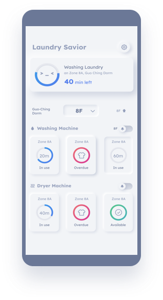
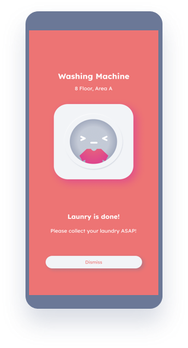
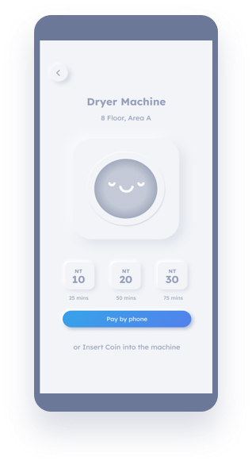

Features
Concept
Design Process
Members
Laundry Savior
Chores made easy.
Features

Dash board
Dashboard to check availibility of the washing machine

Reminder
Remind users to collect laundry immediately

E-payment
Use e-payment for the laundry
Concept Video
Design Process
#1 Need Finding
PDF
#2 Point of View & Experience Prototype
PDF
#3 Concept Video
MP4
PDF
#4 Low-fi Prototype
PDF
#5 Medium-fi Prototype v1
PDF
#6 Group Heuristic Evaluation
PDF
#7 Medium-fi Prototype v2
PDF
#8 Hi-fi Prototype
PDF
#9 Usability Testing
to-be done
#10 Poster, App, High-fi Demo Video
Made with
by